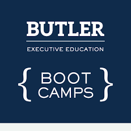

Education
-
Butler University Executive Coding Bootcamp
Currently Enrolled(Graduation 9/15/21)
-
Southern New Hampshire University
Psychology Major
Hello, My name is Dillin Helsley. Im 28 years old and I live in Muncie, Indiana. I have 3 beautiful kids and I am happily engaged with another baby on the way! I currently work for a grocery distribution center for Save-A-Lot grocery stores as an order selector. I am currently enrolled in Butler Universities Executive Coding Bootcamp. I am eagerly anticipating the day that I enter into the field of web development.
In my free time I love to play music, mainly guitar,vocals, and trumpet but I can also play banjo, violin, piano, tuba, and little bit of drums. I have been a performing artist for about 10 years now. I have organized and promoted music events. I have been on the radio locally and have performed with national acts. Music has given me many memorable experiences!
As an order selector my job resposibilities are grabbing the case items for the order given to me through a vocollect headset, stacking them on a pallet so that they will reach their destination, wrapping the finished pallets, labeling them with a shipping label, and then dropping them off at the correct dock door. I have also been a forklift operator. I have been employed with Save-A-Lot since 2019. I really enjoy what I do and Save-A-Lot is a great company to work for and when I make my transition into the field of web development it will be bittersweet. It will be graciously welcomed though!